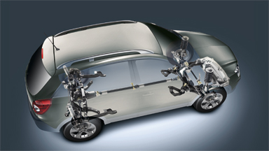

Основные характеристики
Cистема полного привода (AWD)
Opel Antara оснащен системой полного привода с электронным управлением.
При движении в обычных условиях крутящий момент двигателя передается на передние колеса.
Однако при движении по бездорожью или скользкой дороге полный привод включается автоматически,
и крутящий момент перераспределяется между передним и задним мостами в соотношении 50:50, обеспечивая оптимальное распределение мощности.
Система управляемого спуска (DCS)
На Opel Antara в качестве стандартного оборудования устанавливается система, облегчающая управление автомобилем на спуске.
Включенная система DCS поддерживает постоянную скорость при движении под уклон, предварительно заданную водителем с помощью педали акселератора.
Электронные системы помощи при вождении
Opel Antara оснащен совершенными электронными системами помощи при вождении, повышающими активную безопасность.
Дизайн интерьера
Испытайте превосходную комфортабельность Opel Antara.
Обратите внимание на передний подлокотник, хромированные дверные ручки и внутренние зеркала с подсветкой.
Присядьте на высококомфортабельные сиденья, рассчитанные на обеспечение поддержки в сложных дорожных условиях и на создание комфорта при движении по ровным дорогам.
Задние сиденья складываются, освобождая дополнительное пространство для багажа, поэтому у вас не возникнет проблем с погрузкой спортивного снаряжения и других необходимых для отдыха вещей.
Вне зависимости от выбора комплектации неизменным остается одно: великолепный эргономичный дизайн и комфорт.
Трансмиссии
6-ступенчатая механическая коробка передач предлагается в качестве базового оборудования автомобилей с бензиновым двигателем 2.4 ECOTEC® и дизельным двигателем мощностью 163 л.с.,
а 6-ступенчатая автоматическая коробка передач с функцией ActiveSelect® (с возможностью ручного переключения) входит в стандартную комплектацию для автомобилей с двигателем 3.0 V6 ECOTEC®
и доступна в качестве опции для двигателя 2.4 ECOTEC® и дизельного двигателя мощностью 184 л.с.
Система помощи при парковке
Датчики, установленные спереди и сзади автомобиля, активируют звуковой сигнал, предупреждающий об опасности столкновения во время парковки.
Систему помощи при парковке Antara можно выключить нажатием кнопки на центральной консоли.
Электронный климат-контроль (ECC)
Просто выберите желаемую температуру и электронная система управления будет поддерживать ее.
Система Touch&Connect
Мультимедийная навигационная система с 5-дюймовым сенсорным дисплеем и клавишами управления на рулевом колесе.
Содержит картографические данные для 28 европейских стран.
В систему также входит CD-плеер с возможностью воспроизведения MP3-дисков и USB-порт для подключения и управления аудио-устройствами.
Система FlexOrganizer®
Opel Antara предварительно оснащается точками монтажа для системы FlexOrganizer®.
Этот оригинальный организатор багажа имеет рейлинги, к которым можно прикреплять различные разделители, сетки и другие средства хранения.